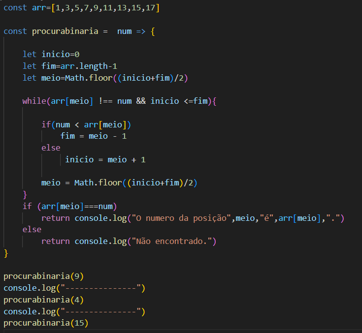
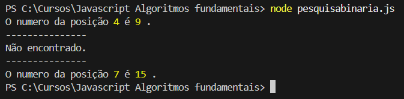
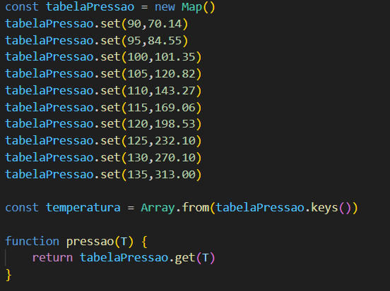
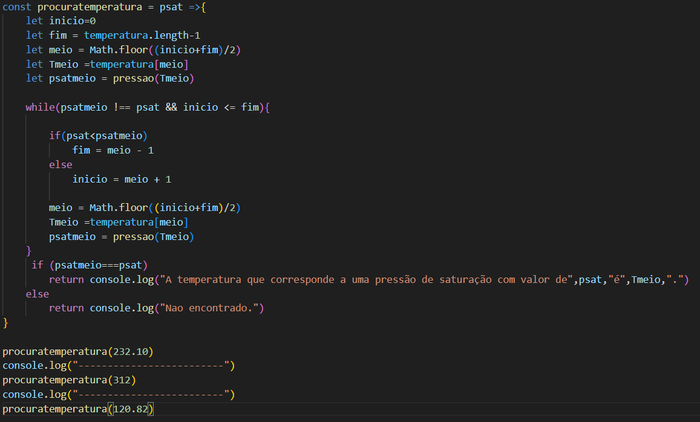
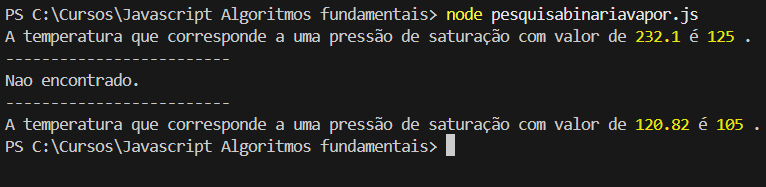

Nos artigos Pré-seleção de solventes por temperatura de ebulição usando pesquisa linear em JavaScript e Adaptação do algoritmo de pesquisa linear para pré-seleção de solventes com múltiplos critérios fisico-químicos em JavaScript, propusemos a alteração de algoritmos fundamentais da ciência da computação - a pesquisa linear - a fim de resolver problemas práticos na área da Química e da Engenharia Química. Nessa postagem, iremos fazer o mesmo trabalho, agora propondo uma alteração no algoritmo da pesquisa binária.
O algoritmo da pesquisa binária é aplicável à procura de um dado valor em uma estrutura de dados ordenada. Nessa caso, não precisamos fazer a iteração sobre todos os elementos da estrutura de dados. Há uma forma muito mais eficiente de fazer a busca em uma estrutura com essa característica, conforme podemos ler em Manual de introdução aos algoritmos:
Na Figura 1 apresentamos um exemplo de algoritmo de pesquisa binária. Primeiramente temos um array de números ordenados chamado arr. Depois declaramos três ponteiros : início, fim e meio. Numa primeira iteração, início assume o valor da posição zero do array, o fim assume a posição final do array e meio é obtido pela expressão Math.floor((inicio+fim)/2). A função Math.floor faz com que o valor do meio seja sempre um número inteiro. Prosseguindo no algoritmo temos um laço while que irá ser executado enquanto as condições arr[meio] !== num e inicio <= fim forem verdadeiras. A primeira expressão significa: enquanto o valor da posição do meio do array for diferente do valor buscado. A segunda expressão : enquanto o ponteiro início for inferior ao ponteiro fim. Dentro do laço while, temos um condicional if, que compara o valor buscado com o valor arr[meio]. Se for menor, o trecho final do array é desprezado e o ponteiro fim assume o valor meio - 1. Se for maior, desprezamos o parte inicial do array e o ponteiro início assume o valor meio + 1. Quando os valores início e fim são renovados, o valor do ponteiro meio também deve ser renovado. Quando a condição arr[meio]===num é atingida, a execução termina e o valor da posição encontrada é impresso. Se o valor não existir no array, a saída é "Não encontrado". Na Figura 2 são apresentadas as saídas da função procurabinaria.


Uma tarefa bastante comum na Química e na Engenharia Química é procurar valores em tabelas termodinâmicas de propriedades de substâncias. Na Tabela 1 são apresentados os valores de pressão de saturação do vapor de água em função da temperatura retirados de um trecho de uma tabela de propriedades termodinâmicas da água. Nosso problema seria descobrir qual temperatura do vapor correspondente a uma determinada pressão de saturação. Em alguns casos, o valor de pressão de saturação poderá corresponder a uma valor exato da tabela, dessa forma podemos associá-lo a um valor exato de temperatura. Em outros casos, o valor de pressão de saturação deverá ser interpolado entre um intervalo da tabela, sendo necessário também interpolar um valor de temperatura. Nesse primeiro artigo, iremos apresentar o algoritmo válido apenas quando o valor de pressão de saturação corresponder a um valor exato da lista de dados. O algoritmo em caso de necessidade de interpolação é apresentado em Interpolação em em Tabelas Termodinâmicas usando Pesquisa Binária em JavaScript.
Para aplicação da pesquisa binária precisamos que os dados estejam ordenados em função da temperatura (em ordem crescente) e que a propriedade associada seja monotônica com a temperatura - nesse caso a pressão de saturação é crescente com a temperatura. Dessa forma podemos utilizar o algoritmo da pesquisa binária para buscar e para interpolar valores de temperatura correspondentes a uma dada pressão de saturação na tabela de propriedades termodinâmicas da água. Num primeiro momento iremos apenas fazer a busca de um valor exato e, posteriormente, iremos apresentar o algoritmo para busca e interpolação.
| Temperatura (°C) | Pressão de saturação (kPa) |
|---|---|
| 90 | 70,14 |
| 95 | 84,55 |
| 100 | 101,35 |
| 105 | 120,82 |
| 110 | 143,27 |
| 115 | 169,06 |
| 120 | 198,53 |
| 125 | 232,10 |
| 130 | 270,10 |
| 135 | 313,00 |
Para resolver o problema da busca da temperatura correspondente a uma determinada pressão de saturação, nós iremos propor uma modificação do algoritmo da pesquisa binária apresentado na seção 1. Num primeiro momento, nós vamos resolver o problema, que não é exatamente o que acontece na prática, propondo uma estrutura que busca qual temperatura da Tabela 1 corresponde a uma pressão de saturação exata usada como valor de entrada da função. Em um artigo seguinte, Interpolação em Tabelas Termodinâmicas usando Pesquisa Binária em JavaScript, apresentamos o algoritmo que utiliza a interpolação para buscar o valor de temperatura que corresponde a uma pressão de saturação cujo valor fica no intervalo entre duas pressões da Tabela 1.
O novo algoritmo terá que executar as seguintes características : utilizar uma estrutura de dados que aceite tanto a chave quanto o valor como números (floats), diferentemente dos dicionários tradicionais que utilizam chaves do tipo string; criar uma função que associe uma pressão de saturação à temperatura correspondente; percorrer a estrutura de dados realizando a comparação entre a pressão de saturação desejada e aquela obtida na tabela; atualizar os ponteiros da busca para eliminar as regiões onde o valor não pode estar, de modo análogo ao algoritmo apresentado na seção 1.
Na Figura 3 é apresentada a estrutura de dados usada para organização dos dados da Tabela 1. No artigo Pré-seleção de solventes por temperatura de ebulição usando pesquisa linear em JavaScript, usamos a estrutura de dados conhecida como dicionário para organização do dados. Essa estrutura é adequada quando temos uma chave que é uma string e um valor que é um número (tipo float). Agora para desenvolvimento do algoritmo de busca da temperatura associada a uma pressão de saturação, precisamos usar uma estrutura que aceite uma chave e um valor que sejam números. Em JavaScript temos a estrutura Map, que cria um objeto com essas características. Para criar a estrutura de dados, usamos o comando new Map() para criar o objeto tabelaPressao. Para inserir dados na estrutura, usamos o comando .set(), com os pares de dados que queremos inserir.
Nessa estrutura de dados, a temperatura é a chave, que é um número (float) e a pressão de saturação é o valor que também é um float. Para acessar a chave de um objeto tipo Map, usamos o comando .get(chave). Criamos uma função chamada pressão() para acessar o valor de temperatura correspondente a uma dada pressão de saturação.

Na Figura 4 , temos o algoritmo de pesquisa binária modificado. É muito semelhante ao apresentado na seção 1. Temos os três ponteiros início, fim e meio. Além disso, temos a variável Tmeio, que é a temperatura correspondente à posição do ponteiro meio, que é usada na função pressao para procurar a presão de saturação correspondente na estrutura Map. Depois de realizar a comparação entre o valor buscado, psat , e o valor psatmeio localizado na estrutura tabelaPressao, os valores início, fim, meio, Tmeio e Psatmeio são renovamos e a busca continua até que psatmeio === psat.

Na Figura 5 temos a saída do algoritmo. Quando entramos com um valor exato de presão de saturação no algoritmo, temos como saída um valor de temperatura. Quando temos como entrada um valor que não se encontra na estrutura de dados, a saída é "Não encontrado". Esse algoritmo apresenta essa limitação e não atende à resolução de um problema real, no qual dificilmente queremos procurar um valor de temperatura correspondente a uma pressão de vapor exata da Tabela 1 . Mas decidimos dividir o desenvolvimento do algoritmo completo com interpolação de vaores em duas partes, a segunda sendo apresentada em Interpolação em Tabelas Termodinâmicas usando Pesquisa Binária em JavasScript.

Desenvolvimento : Química Programada